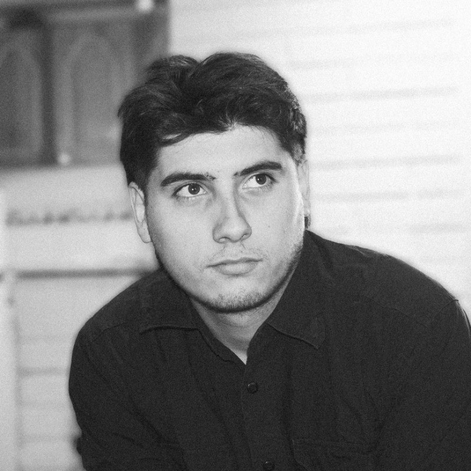

JOSÉ MIGUEL LEIVA
Es periodista titulado de la Universidad de Chile, con menciones en Periodismo Narrativo y Periodismo Cultural. Ha trabajado en instituciones culturales y publicado en medios culturales, literarios y universitarios. Su principal oficio es la escritura, también ha creado proyectos audiovisuales, digitales y gráficos.
